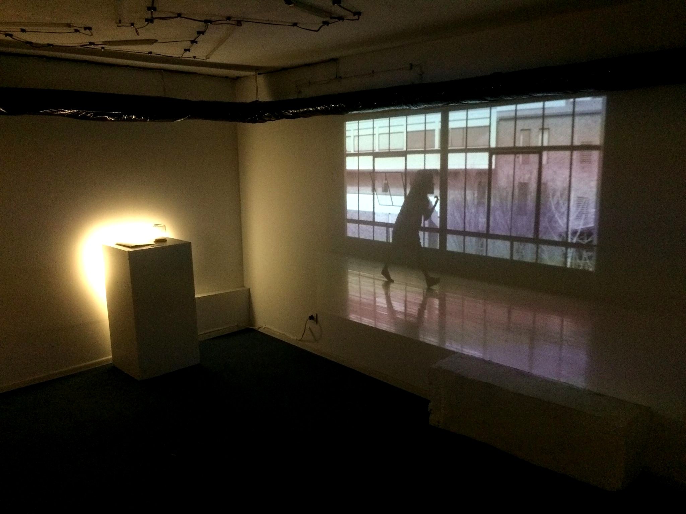
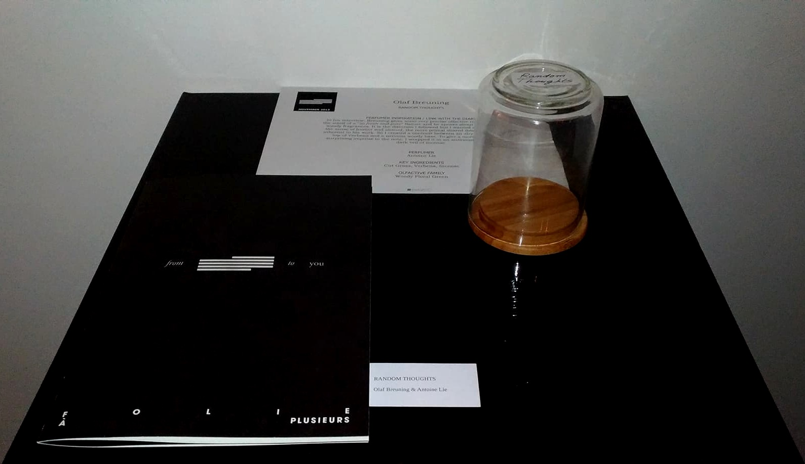
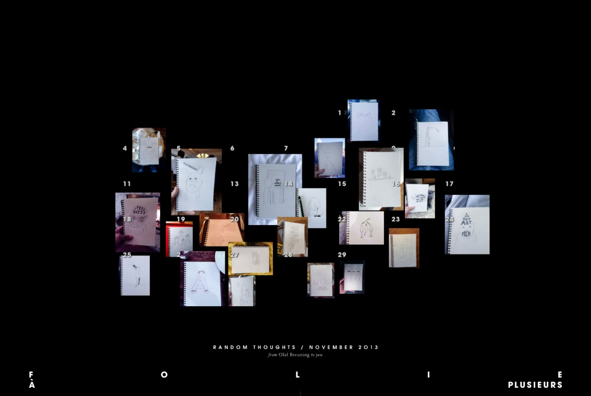
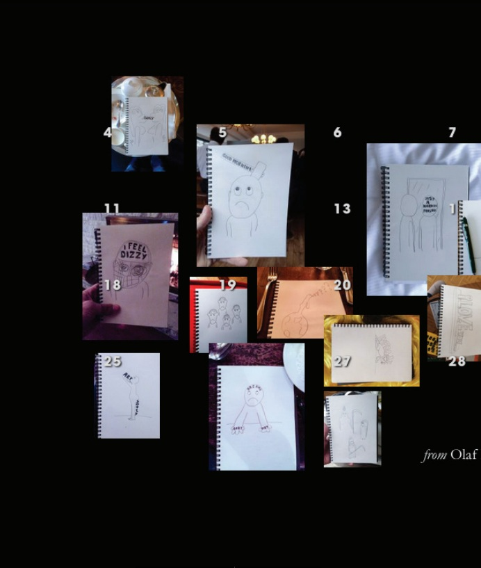
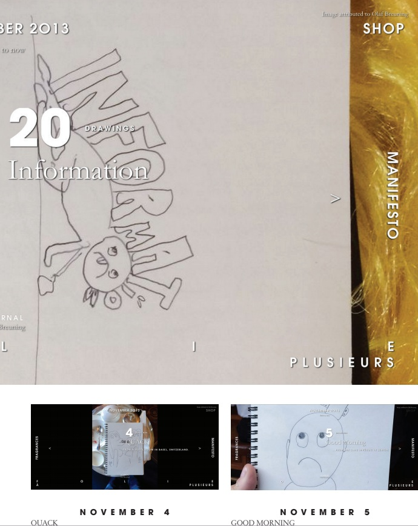
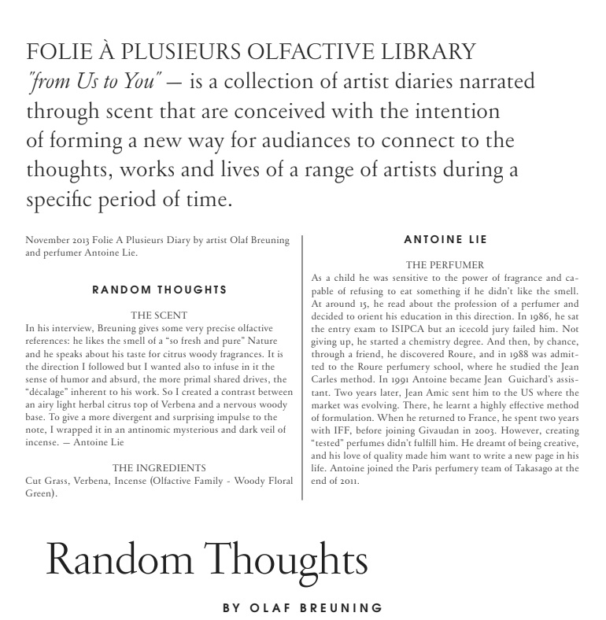

Olfactif Diaries
The project was an ongoing digital journal and olfactive study by Folie à Plusieurs that archived the thoughts, reflections and madness of many individuals across a wide range of creative disciplines. At the end of the month, the visual entries of our contributors were to be translated into an exclusive artwork that is revealed through the medium of scent and added to Folie À Plusieurs Olfactive Library. These sensory artifacts were a be a part of an exhibition I developed in a collaboration with Aether gallery in Sofia.
The Folie À Plusieurs website functioned as digital journal and workshop providing an online gallery experience (visuals) that results in an offline olfactive experience (fragrance). For the digital journal, each month I would select an artist and invite him/her to submit personal images, writings, photos, music or video’s that represent their feelings, ideas or thoughts that they experience over the course of a month. At the end of the month the contributing artists’ journal was read by a renowned perfumer and then translated into the form of a fragrance. Eleven fragrances were created exclusively for Folie À Plusieurs Olfactive Library during my curatorial practice in the house. These included:
This is the Hunt by artist Nissa Nishikawa & perfumer Antoine Lie
Random Thoughtsby Olaf Breuning & perfumer Antoine Lie
New Bornby artist Voin de Voin & perfumer Jerome Di Marino
Microcosmby artist Yeka Haski & perfumer Jean Jacque
True Colorsby designers Craig and Karl & perfumer Jean Jacque
Pattern Hoursmusical duo 1000 Names & perfumer Antoine Lie
Cheveux Rouxartist Methew Murphy & perfumer Antoine Lie
Pulling Down from the Ephemeralby dancer Brooke Stamp & perfumer Jerome Di Marino
Under the Silent Grounddesigner by Philipp Webber & perfumer by Sylvie Fisher
What if? by artist Lee Eliot Hazel & perfumer by Jean Jacque
Nostalgiaby artist Maripol & perfumer Jerome Di Marino
